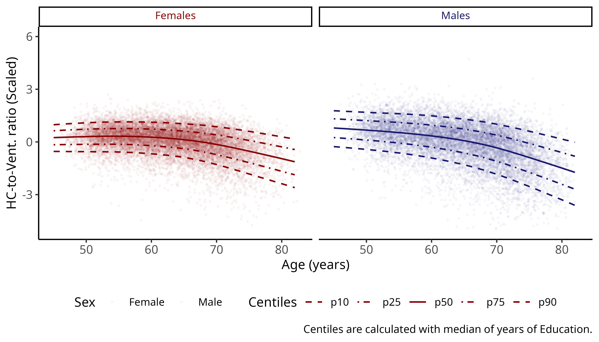
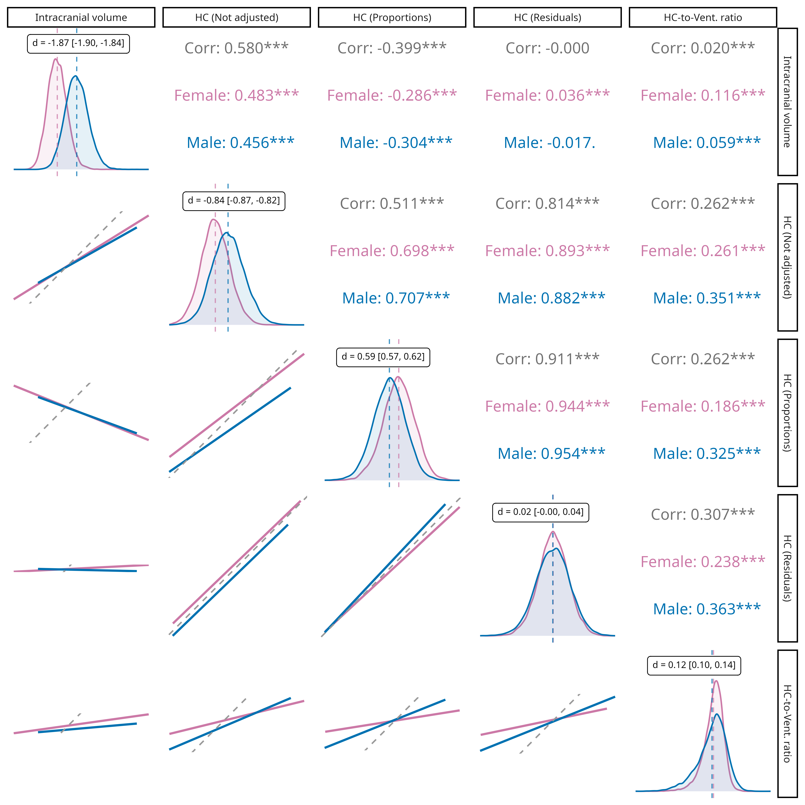

Thesis Seminar
Sofía Fernández Lozano
Integrated Program in Neuroscience
Hippocampal-to-Ventricle Ratio
in Alzheimer's Disease:
Computation, Validation, and Characterization
Background and Related Work
Context
Aging, Cognition, and Brain Imaging
- Cognitive aging is a major area of concern in neuroscience and public health.
- Brain atrophy—especially in the hippocampus—is linked to memory loss and dementia.
- Structural MRI allows non-invasive tracking of brain changes.
Aging, Cognition, and Brain Imaging
- Cognitive aging is a major area of concern in neuroscience and public health.
- Brain atrophy—especially in the hippocampus—is linked to memory loss and dementia.
- Structural MRI allows non-invasive tracking of brain changes.
- But raw hippocampal volume has limitations
HC biomarkers: Limitations
- Sex differences in HC volume may be inflated or masked by total brain size.
- Adjusting for head-size is not standardized.
- Ventricular enlargement also marks neurodegeneration but is rarely modeled jointly.
- Most models ignore nonlinear age effects and individual variability.
Research Problem
& Aim
Research Problem
- The hippocampus (HC) is a widely used structural MRI biomarker for aging and neurodegeneration.
- Yet, HC volume shows high variability even in healthy populations.
- Sex differences in HC are debated, often confounded by head-size normalization strategy.
- Interpretation of HC volume alone can be ambiguous across the lifespan or clinical groups.
Research Problem
- The hippocampus (HC) is a widely used structural MRI biomarker for aging and neurodegeneration.
- Yet, HC volume shows high variability even in healthy populations.
- Sex differences in HC are debated, often confounded by head-size normalization strategy.
- Interpretation of HC volume alone can be ambiguous across the lifespan or clinical groups.
Research Problem
- The hippocampus (HC) is a widely used structural MRI biomarker for aging and neurodegeneration.
- Yet, HC volume shows high variability even in healthy populations.
- Sex differences in HC are debated, often confounded by head-size normalization strategy.
- Interpretation of HC volume alone can be ambiguous across the lifespan or clinical groups.
- The hippocampal-to-ventricle ratio (HVR) was proposed as an alternative biomarker
Research Problem
- The hippocampus (HC) is a widely used structural MRI biomarker for aging and neurodegeneration.
- Yet, HC volume shows high variability even in healthy populations.
- Sex differences in HC are debated, often confounded by head-size normalization strategy.
- Interpretation of HC volume alone can be ambiguous across the lifespan or clinical groups.
- The hippocampal-to-ventricle ratio (HVR) was proposed as an alternative biomarker
- It was proposed on a relatively small sample of healthy older adults.
- It's manual calculation prohibits its use on large samples.
Overall Research Aim
To ease, validate, and characterize the use of hippocampal and ventricular biomarkers—particularly the hippocampal-to-ventricle ratio (HVR)—for improved understanding of sex differences and cognitive decline in both aging and neurodegeneration.
Objectives, Questions
& Hypotheses
General Objectives
- Develop tools to ease the application and quality control of the segmentations needed for the calculation of the HVR
- Validate and expand the preliminary results of HVR on a larger and clinical sample.
- Build normative models of HVR for its use in the clinic.
- Explore and compare HVR with other ways of controlling for head-size in medio-temporal volumetrics.
- Test whether including ventricular data improves models linking brain structure to cognitive performance.
Research questions
- Can collaborative QC tools make the assessment and curation of data faster and more consistent?
- Which segmentation method yields the most robust and accurate HVR estimates?
- Does HVR outperform conventional HC volumes in detecting group (age, sex, clinical) differences and predicting cognitive scores?
- Does HVR-based models better explain cognitive performance and sex differences than other head-size adjustment methods for the HC?
- Does ventricular volume help explain difference in cognition?
Hypotheses
- The process of data curation and inspection can be made faster and more robust with the use of collaborative software.
- Novel CNN-based segmentations yield more accurate and robust HVR estimates than older methods.
- HVR shows stronger associations with aging and cognition than conventional HC volume.
- Normative models using HVR are more sensitive to age effects than those using conventional HC volume.
- Models including both HC and ventricular volumes better predict cognition than those with HC alone.
Chapter 1
Qrater:
a collaborative and centralized imaging quality control web-based application
Why we needed it?
Why we needed it?
- QC was a bottleneck: thousands of MRI segmentations needed checking
- Existing tools were slow, non-collaborative, and hard to scale
- Needed: A fast, shared tool to view and rate images across raters
So I built Qrater
Qrater
- Web-based. Works with any 2D image.
- Multiple users can work on the same data simultaneously.
- Feature-rich:
- Brightness/contrast controls
- Zoom
- Keyboard shortcuts
- Comments
Qrater

Benchmark Tests

- Raw unprocessed T1w brain images
- T1w brain images non-linearly registered to standard template
- Output of experimental skull extraction pipeline
Benchmark Tests
- Raw unprocessed T1w brain images
- T1w brain images non-linearly registered to standard template
- Output of experimental skull extraction pipeline
Benchmark Tests
- Raw unprocessed T1w brain images
- T1w brain images non-linearly registered to standard template
- Output of experimental skull extraction pipeline
Does it work?
- Collaboration features are useful for training
- Faster QC
- Collaboration features are useful for training
Trainees agreement with experienced rater kept increasing throughout the project:
59-86% (mean 77%) on the first exercise; 73-92% (mean 84.75%) on the second - Faster QC
- Collaboration features are useful for training
- Faster QC
- Collaboration features are useful for training
- Faster QC
QC on linear registration: 3x faster for trainees, 2x faster for experts
QC on skull segmentation: from 1 min/image -> 3 sec/image
Chapter 1 Summary — Qrater in Use
- Build to solve a bottleneck in large-scale neuroimaging QC
- Adopted beyond this project and my own use
Chapter 1 Summary — Qrater in Use
- Build to solve a bottleneck in large-scale neuroimaging QC
- Enables faster and more consisten image rating.
- Versatile enough for raw MRI, registration, segmentation tasks, and many more.
- Adopted beyond this project and my own use
Chapter 1 Summary — Qrater in Use
- Build to solve a bottleneck in large-scale neuroimaging QC
- Adopted beyond this project and my own use
- Available on DockerHub and used by other labs.
- 50+ datasets uploaded in our own instance.
- 250K+ images loaded and rated by our team.
Chapter 1 Summary — Qrater in Use
- Build to solve a bottleneck in large-scale neuroimaging QC
- Adopted beyond this project and my own use
- Enabled reliable QC for segmentation validation and HVR estimation
Chapter 2
Enhanced Detection of Age-Related and Cognitive Decline Using Automated HVR in AD patients
From Potential to Practice
From Potential to Practice
- HVR had shown promise, but only in a small, controlled sample.
- We needed a way to compute it efficiently, reliably, and at scale.
- And we needed to know if it actually hel up in clinical populations.
Goals
- Automatize the calculation of HVR
- Confirm its preliminary results on a larger clinical sample
Goals
- Automatize the calculation of HVR
- Compare the performance of different segmentation methods
- Build a Docker tool for easy implementability by other users
- Confirm its preliminary results on a larger clinical sample
Goals
- Automatize the calculation of HVR
- Confirm its preliminary results on a larger clinical sample
-
Calculate HVR on ADNI data of:
cognitively healthy (CH), mild cognitively-impaired (MCI), and AD patients -
Compare it to conventional HC volume on:
Patient—Control effect sizes & age, memory and general cognition correlation
Automatic segmentation
- Available labels from: Schoemaker, et al. ; N = 80
- Train different segmentation techniques
- Validate on an out-of-sample clinical dataset
- Compare with widely used FreeSurfer
Automatic segmentation
- Available labels from: Schoemaker, et al. ; N = 80
- Train different segmentation techniques
- Multi-atlas label fusion; Collins & Pruessner, 2010;
- Non-local Patch-based segmentation; Coupé, et al., 2011
- Convolutional Neural Network; Fonov, et al., 2022
- Validate on an out-of-sample clinical dataset
- Compare with widely used FreeSurfer
Automatic segmentation
- Available labels from: Schoemaker, et al. ; N = 80
- Train different segmentation techniques
- Validate on an out-of-sample clinical dataset
- The CNN network was also validated on the segmentation of independet dataset.
- 60 manually segmented ADNI images: 20/20/20 CH, MCI & AD.
- Compare with widely used FreeSurfer
Automatic segmentation
- Available labels from: Schoemaker, et al. ; N = 80
- Train different segmentation techniques
- Validate on an out-of-sample clinical dataset
- Compare with widely used FreeSurfer
- FreeSurfer v.4.3, v.5.1, and v.6.0*; Fischl, et al., 2002
Automatic segmentation performance
Manual-Computed volume relationships
Bland-altman plots
Out-of-sample validation
- High accuracy across clinical groups:
0.88-0.92 on Dice, Kappa, and Sensitivity; 0.99-1.0 on Accuracy and Specificity. - Strong Manual-Computed correlations:
0.94 for CH; 0.93-0.96 for MCI; 0.9-0.96 for AD. - Minimal bias in volume estimates across the groups.
Application on ADNI data
Demographics
Difference in HC & HVR across methods
Number of failures across methods
Similarity & effect sizes: Hippocampus

Similarity & effect sizes: HVR
Correlations with age, RAVLT & ADAS13

Chapter 2 Summary — HVR Validated
- HVR can be computed automatically and reliably:
- CNN-based segmentations were accurate (Dice ≈ 0.94) and robust.
- Dockerized tool enables fast, reproducible HVR estimation in large datasets.
- HVR caputres clinically relevant changes:
- Efect sizes for CH-AD were stronger than HC volume alone.
- More sensitive for aging effects across clinical groups.
- Better associations with cognition (ADAS13 & Memory), particularly on lower quality segmentations.
Chapter 3
Sex, Head Size, and Brain Structure: Modeling Cognition in Aging Adults
Scaling up what we found
- In the ADNI sample, HVR showed stronger associations with age than HC.
- We hypothesized that HVR's sensitivity to age-related neurodegeneration was driven by its ventricular component.
Scaling up what we found
- In the ADNI sample, HVR showed stronger associations with age than HC.
- We hypothesized that HVR's sensitivity to age-related neurodegeneration was driven by its ventricular component.
- So we decided to explore this in a much larger sample.
UK Biobank
Non-linear Aging Trajectories of HC, HVR, and lateral ventricles
Aging Trajectories of
HC, HVR, and lateral ventricles
- We used GAMLSS to model the non-linear aging trajectories of HC, HVR and the lateral ventricles.
- From these models, we derived:
- Z-scores to assess individual deviations.
- Normative tables across the later lifespan.
Aging Trajectories of
HC, HVR, and lateral ventricles
Aging Trajectories of
HC, HVR, and lateral ventricles

Aging Trajectories of
HC, HVR, and lateral ventricles
Age-related patterns vary by marker
- HC shows a shallow decline with age.
- The lateral ventricles increase more strongly across the lifespan.
- HVR, besides showing less variability in early adulthood, captures both effects, showing a steeper non-linear aging pattern.
Do these structural changes relate to cognition?
- We used the GAMLSS model's derived Z-scores to quantify the individual deviations from age-normed HC and HVR trajectories.
- We tested how HC and HVR Z-scores relate to three cognitive domains.
Structural Equation Modeling
- Measurement model
- Cognitive domains built as a latent variable from relevant observed cognitive scores.
- Memory, Executive Function, Processing Speed
- Structural model
- Endogenous variables: Cognitive domains
- Exogenous variables: HC & HVR Z-scores
SEM: Measurement model
SEM: Structural model
What lies beyond the Z-scores?
- HC & HVR Z-scores showed modest but significant associations with cognition, with HVR consistently lower in magnitude.
- Z-scores inherently control for covariates; which may mask relevant variance.
What lies beyond the Z-scores?
- To further probe structural-cognitive associations, we directly compared different head-size adjustment strategies.
- This next section evaluates raw vs adjusted vs ratio-based approaches using SEM model fit and effect size metrics.
Different ways of doing the same thing
- As a covariate
- Proportion
- Residuals
- Hippocampal-to-Ventricle Ratio
Different ways of doing the same thing
- As a covariate
- Using raw volumes and adding TIV as a covariate in the model.
- Proportion
- Residuals
- Hippocampal-to-Ventricle Ratio
Different ways of doing the same thing
- As a covariate
- Proportion
- Assumes a proportional relationship between TIV and the volume of interest.
- $VOL_{adj} = VOL / TIV$
- Residuals
- Hippocampal-to-Ventricle Ratio
Different ways of doing the same thing
- As a covariate
- Proportion
- Residuals
- Removes an implicitly assumed linear TIV-VOI relationship:
- $VOL_{adj} = VOL - b * (TIV - TIV_{avg})$
- $b$ is the slope of the $VOL ~ TIV$ regression line, and $TIV_{avg}$ is the mean of the TIV of the control group.
- Hippocampal-to-Ventricle Ratio
Different ways of doing the same thing
- As a covariate
- Proportion
- Residuals
- Hippocampal-to-Ventricle Ratio
- HVR quantifies the proportion of hippocampal volume relative to the combined volume of the hippocampus and temporal horns of the lateral ventricles.
- ${HVR} = HC / (HC + LV)$
- In this project, we are calculating HVR using HC & LV volumes adjusted with the residuals method.
Structural Equation Modeling
- Measurement model
- Cognitive domains as latent variables
- Structural model
- Endogenous variables: Cognitive domains
- Exogenous variables:
- Hippocampal & Ventricular volumetrics
- TIV, Age, Sex, & Education as covariates.
SEM: Measurement model
SEM: Structural model
Memory
SEM: Structural model
Executive Function
SEM: Structural modelProcessing Speed
Processing Speed
SEM: Structural model
Memory
SEM: Structural model
Executive Function
SEM: Structural modelProcessing Speed
Processing Speed
SEM: Structural model
Memory
SEM: Structural model
Executive Function
SEM: Structural modelProcessing Speed
Processing Speed
SEM: Models' Fit
SEM: Summary of findings
- All model were structurally identical; only the HC input differed.
- HC Proportions-adjusted models were the less reliable.
- HVR consistently showed stronger associations with cognition.
- Adding TIV as a covariate flipped the Sex-effects on cognition.
- AIC/BIC favoured the full models (HC + TIV + LV), but CFI/TLI favoured HVR models.
Are sex differences
real
or
just a by-product of head-size?
Are sex differences real or just a by-product of head-size?
- Head-size correction methods impacted the direction and size of observed sex differences.
- But it's unclear whether these are true biological differences or artifacts of brain-size variation.
Are sex differences real or just a by-product of head-size?
- Head-size correction methods impacted the direction and size of observed sex differences.
- But it's unclear whether these are true biological differences or artifacts of brain-size variation.
- To assess this, we compared Male-Female effect sizes in a subsample matched on TIV.
Matched subsample
Sex effects: Complete sample

Sex effects: Matched sample

Sex effects: Complete sample
(Ventricles)

Sex effects: Matched sample
(Ventricles)

Sex Differences After Matching for Head Size
- Matching males and females on ICV minimized volume differences in raw HC.
- Proportional and residual adjustments reduced or reversed sex effects.
- HVR consistently preserved modest but meaningful sex differences.
- Ventricular volume also retained sex effects, even after adjustment.
- Suggests that some sex differences in brain structure are not explained by head size.
Sex Differences After Matching for Head Size
- Matching males and females on ICV minimized volume differences in raw HC.
- Proportional and residual adjustments reduced or reversed sex effects.
- HVR consistently preserved modest but meaningful sex differences.
- Ventricular volume also retained sex effects, even after adjustment.
- Suggests that some sex differences in brain structure are not explained by head size.
- HVR may captures these residual biological differences more faithfully than conventional corrections
Chapter 3 Summary — Structure, Adjustment & Interpretation
- Normative modeling showed HVR & LV better captured age-related structural change than HC
- Z-scores analyses showed stronger cognitive associations for HC; yet they were largely driven by head-size.
- SEM comparisons showed head-size correction strategy alters interpretability.
- Matched-sample results confirmed that HVR preserves sex effects not explained by head-size.
Chapter 3 Summary — Structure, Adjustment & Interpretation
- Normative modeling showed HVR & LV better captured age-related structural change than HC
- Z-scores analyses showed stronger cognitive associations for HC; yet they were largely driven by head-size.
- SEM comparisons showed head-size correction strategy alters interpretability.
- Matched-sample results confirmed that HVR preserves sex effects not explained by head-size.
- Across analyses, HVR proved sensitive to age, sex-effects, structurally meaningful and less confounded by head-size.
Original Contributions
Methodological Contributions
- Qrater: Open-source web platform for collaborative QC
- HVR Docker Tool: User-friendly container for the automatic segmentation and calculation of the HVR.
- Normative Percentile Tables: Generated and released normative percentile tables for HC, HVR and lateral ventricular volumes.
Scientific Findings
- HVR validation: validated HVR as a robust, aging-sensitive biomarker in AD/MCI/Healthy aging cohorts.
- Comparative evaluation of head-size correction strategies: demonstrated its effects in cognitive modeling and sex-effects
- Evidence for residual sex effects: showed that sex differences persist in HVR aven after TIV-matching.
- Found that Z-scores derived from normative models supress meaningful variance and are not optimal for cognitive associations.
Thesis Completion Timeline
- Chapter 1: Introduction (3–5pp) – 0% → ~3–4 days
- Chapter 2: Background (25–35pp) – 15–20% → ~2–2.5 weeks
- Chapter 3: Qrater – Published (formatting only) → ~2–3 days
- Chapter 4: HVR Validation – Submitted (revisions) → ~5–14 days
- Chapter 5: Normative Models + Sex Effects – 40% → ~2.5–3 weeks
- Chapter 6: General Discussion – Not started → ~3 weeks
- Formatting and front matter → ~1 week
- Chapter 1: Introduction (3–5pp) – 0% → ~3–4 days
- Chapter 2: Background (25–35pp) – 15–20% → ~2–2.5 weeks
- Chapter 3: Qrater – Published (formatting only) → ~2–3 days
- Chapter 4: HVR Validation – Submitted (revisions) → ~5–14 days
- Chapter 5: Normative Models + Sex Effects – 40% → ~2.5–3 weeks
- Chapter 6: General Discussion – Not started → ~3 weeks
- Formatting and front matter → ~1 week
➡ Expected submission: End of August, 2025